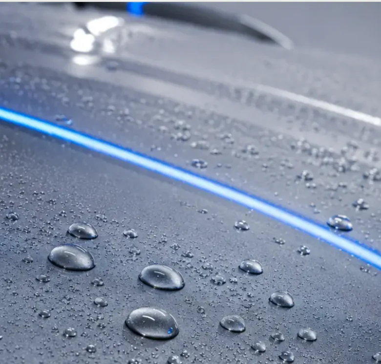

Il metodo Riflesso
LA BRILLANTEZZA
non basta.
Un risultato bello solo sotto una certa luce non ci interessa. Il processo parte da osservazione e misura, non dalla scelta di un prodotto.

Protezione / 9hTre passaggi chiave
PRIMA
CAPIAMO.
POI FACCIAMO.
01
Check inizialeFoto, difetti, materiali, spessori dove serve e aspettative realistiche.
02
Lavorazione mirataProdotti, tamponi e passaggi scelti sul problema, non su un pacchetto predefinito.
03
Consegna consapevoleControllo finale sotto luci diverse e istruzioni di mantenimento semplici.
LA CURA SI VEDE
anche dopo.
Il detailing non finisce quando l’auto esce dal laboratorio. Un trattamento deve essere pensato anche per il modo in cui l’auto verrà usata e lavata nei mesi successivi.
Per questo evitiamo lavorazioni inutili.
- Non correggiamo più vernice del necessario.
- Non copriamo gli odori con profumi aggressivi.
- Non promettiamo l’eliminazione di difetti che richiederebbero rischi inutili.
- Non proponiamo una protezione se la superficie non è pronta a riceverla.